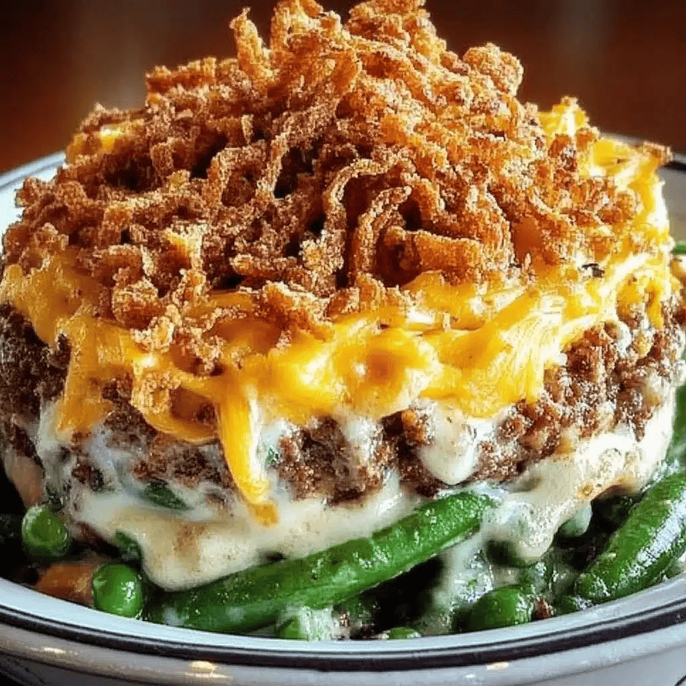

Green Bean Casserole
by Bri

A classic American casserole baked in a 9 by 11 cake pan, mixed with cream of mushroom soup, green beans, and hamerburger are combined to create a delicious dish topped with french fried onions and baked to perfection. (12 servings).